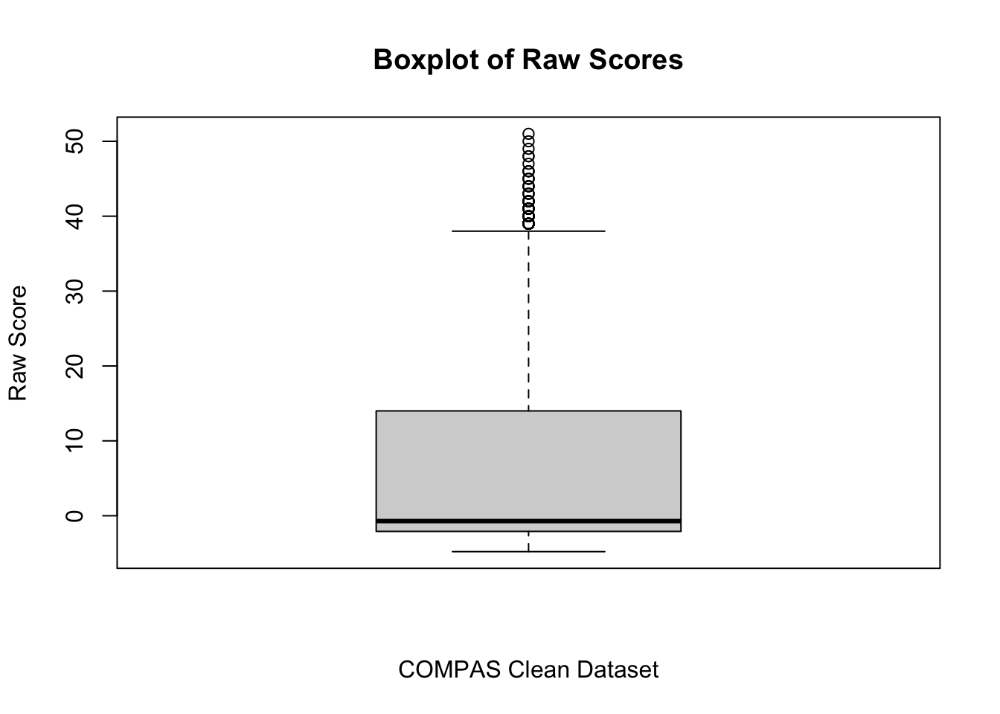
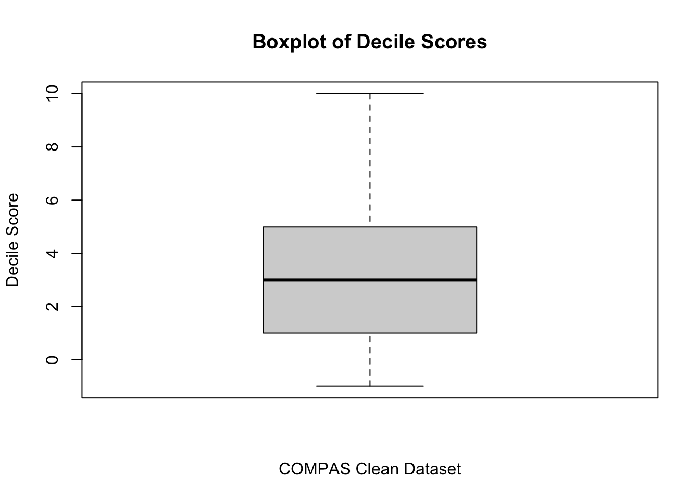
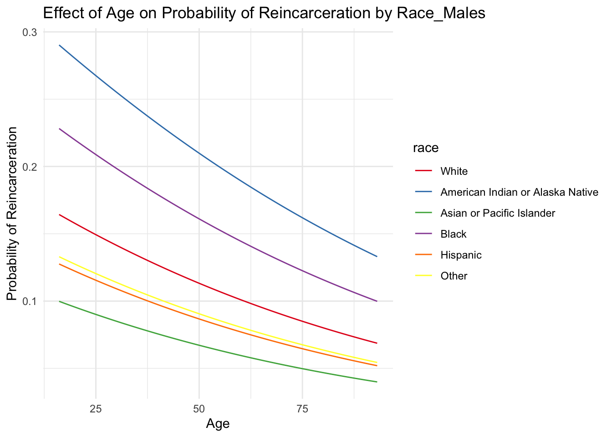
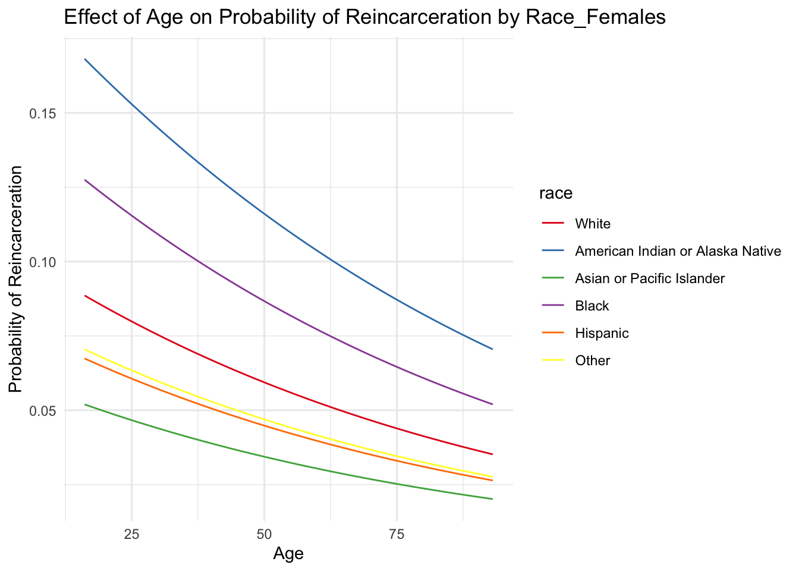
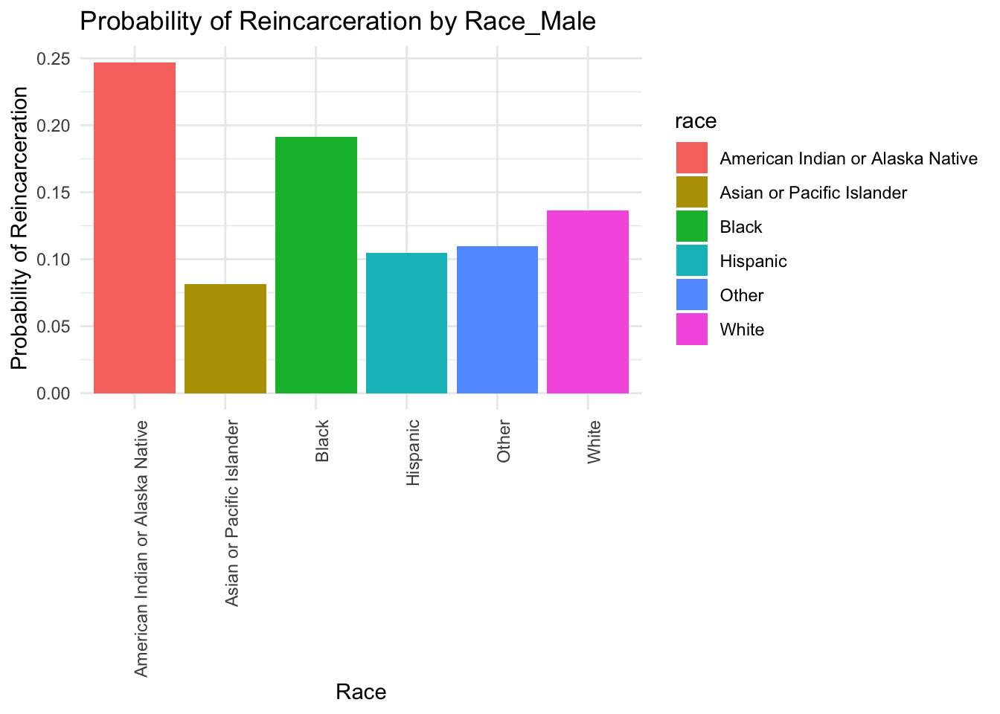

Here we provide a detailed analysis using more sophisticated statistics techniques.
This comes from the file analysis.qmd.
We describe here our detailed data analysis. This page will provide an overview of what questions you addressed, illustrations of relevant aspects of the data with tables and figures, and a statistical model that attempts to answer part of the question. You’ll also reflect on next steps and further analysis.
The audience for this page is someone like your class mates, so you can expect that they have some level of statistical and quantitative sophistication and understand ideas like linear and logistic regression, coefficients, confidence intervals, overfitting, etc.
While the exact number of figures and tables will vary and depend on your analysis, you should target around 5 to 6. An overly long analysis could lead to losing points. If you want you can link back to your blog posts or create separate pages with more details.
The style of this paper should aim to be that of an academic paper. I don’t expect this to be of publication quality but you should keep that aim in mind. Avoid using “we” too frequently, for example “We also found that …”. Describe your methodology and your findings but don’t describe your whole process.
Example of loading data
The code below shows an example of loading the loan refusal data set (which you should delete at some point).
library(tidyverse) print(getwd()) data <- read_csv(here::here(“dataset/loan_refusal_clean.csv”)) load(here::here(“dataset/loan_refusal.RData”)) print(ls())
Note on Attribution
In general, you should try to provide links to relevant resources, especially those that helped you. You don’t have to link to every StackOverflow post you used but if there are explainers on aspects of the data or specific models that you found helpful, try to link to those. Also, try to link to other sources that might support (or refute) your analysis. These can just be regular hyperlinks. You don’t need a formal citation.
If you are directly quoting from a source, please make that clear. You can show quotes using > like this
> To be or not to be.
To be or not to be.
Rubric: On this page
You will
Introduce what motivates your Data Analysis (DA)
Which variables and relationships are you most interested in?
What questions are you interested in answering?
Provide context for the rest of the page. This will include figures/tables that illustrate aspects of the data of your question.
Modeling and Inference
The page will include some kind of formal statistical model. This could be a linear regression, logistic regression, or another modeling framework.
Explain the ideas and techniques you used to choose the predictors for your model. (Think about including interaction terms and other transformations of your variables.)
Describe the results of your modelling and make sure to give a sense of the uncertainty in your estimates and conclusions.
Explain the flaws and limitations of your analysis
Are there some assumptions that you needed to make that might not hold? Is there other data that would help to answer your questions?
Clarity Figures
Are your figures/tables/results easy to read, informative, without problems like overplotting, hard-to-read labels, etc?
Each figure should provide a key insight. Too many figures or other data summaries can detract from this. (While not a hard limit, around 5 total figures is probably a good target.)
Default lm output and plots are typically not acceptable.
Clarity of Explanations
How well do you explain each figure/result?
Do you provide interpretations that suggest further analysis or explanations for observed phenomenon?
Organization and cleanliness.
Make sure to remove excessive warnings, hide most or all code, organize with sections or multiple pages, use bullets, etc.
This page should be self-contained, i.e. provide a description of the relevant data.
NOTE: Everything above this should be removed before final submission.
Investigating the COMPAS Score: Unraveling Recidivism Patterns
Introduction
In the intricate landscape of criminal justice, the COMPAS (Correctional Offender Management Profiling for Alternative Sanctions) score stands as a pivotal metric. Judges and law enforcement officers rely on it to assess the likelihood of an individual reoffending—essentially predicting their propensity to commit future crimes. But behind this seemingly objective tool lies a web of complexities, biases, and ethical dilemmas.
Our data analysis endeavors to shed light on the relationship between the COMPAS score and several key factors: ethnic race, sex, and age. By delving into this trove of information, we aim to unravel patterns, expose potential disparities, and contribute to a more informed discourse on recidivism.
The Motivation
Justice or Prejudice?
The COMPAS score, while ostensibly neutral, has faced scrutiny for potential racial and gender biases. Are certain demographics disproportionately labeled as high-risk offenders? Our investigation seeks to answer this critical question.
Age and Recidivism:
Does age play a role in the likelihood of reoffending? We explore whether the COMPAS score treats youthful offenders differently from their older counterparts.
Ground Truth vs. Prediction:
Our dataset not only includes the COMPAS score but also tracks whether individuals have actually reoffended. By comparing these ground truth outcomes with the predicted scores, we can assess the model’s accuracy and uncover any discrepancies.
Modeling and Inference
Initial Exploration of Collected Data
library(tidyverse)
── Attaching core tidyverse packages ──────────────────────── tidyverse 2.0.0 ──
✔ dplyr 1.1.4 ✔ readr 2.1.5
✔ forcats 1.0.0 ✔ stringr 1.5.1
✔ ggplot2 3.4.4 ✔ tibble 3.2.1
✔ lubridate 1.9.3 ✔ tidyr 1.3.0
✔ purrr 1.0.2
── Conflicts ────────────────────────────────────────── tidyverse_conflicts() ──
✖ dplyr::filter() masks stats::filter()
✖ dplyr::lag() masks stats::lag()
ℹ Use the conflicted package (<http://conflicted.r-lib.org/>) to force all conflicts to become errors
compas_scores_clean <-read_csv("dataset/compas-scores-clean.csv", show_col_types =FALSE)# Boxplot for RawScoreboxplot(compas_scores_clean$RawScore, main="Boxplot of Raw Scores", ylab="Raw Score", xlab="COMPAS Clean Dataset")

The box plot of the Raw Scores shows a wide range in values, suggesting a high level of variability among the scores. The median value is slightly above zero, and there is a notable presence of high outliers, indicating that some scores are significantly higher than the majority. The spread of scores within the interquartile range is large, pointing to a substantial dispersion among the middle 50% of data points. In contrast, there are no outliers on the lower side, which suggests that the lower scores are more closely packed together without extreme low values.
The skew and outliers in the raw score suggests a less useful information. Thus, Decile Score, a normalized COMPAS score divided into 10 scales, with closer to 10 meaning higher COMPAS score, might give more insight:
# Boxplot for DecileScoreboxplot(compas_scores_clean$DecileScore, main="Boxplot of Decile Scores", ylab="Decile Score", xlab="COMPAS Clean Dataset")

The box plot for the Decile Scores presents a more symmetrical distribution, with a median value around the midpoint of the score range. This plot is characterized by a narrower interquartile range, indicating less variation among the central half of the scores compared to the Raw Scores. The absence of significant outliers in the Decile Score distribution suggests a more uniform scoring scale, indicating a methodical categorization into deciles. This normalizing process distribute the scores more evenly across a predetermined scale. Thus, focusing on Decile Score might give more insight to the overall population’s COMPAS score.
Relationship Between Sex and Decile Score
library(tidyverse)library(MASS)
Attaching package: 'MASS'
The following object is masked from 'package:dplyr':
select
── Column specification ────────────────────────────────────────────────────────
Delimiter: ","
chr (3): Sex, Race, ScoreText
dbl (4): Person_ID, Age, RawScore, DecileScore
date (1): DateOfBirth
ℹ Use `spec()` to retrieve the full column specification for this data.
ℹ Specify the column types or set `show_col_types = FALSE` to quiet this message.
model <-polr(as.factor(DecileScore) ~ Sex, data = compas_scores_clean, Hess=TRUE)model
predictions <-predict(model, compas_scores_clean, type="class")ggplot(compas_scores_clean, aes(x=Sex, y=DecileScore)) +geom_boxplot() +labs(title="Distribution of DecileScores by Sex",x="Sex",y="DecileScore") +theme_minimal()
Both Female and Male categories have median scores (indicated by the line inside the box) that are approximately at the same level, suggesting that the central tendency of scores is similar across both sexes. The range for Males is slightly larger than for Females, which suggests that scores for Males are more spread out. There do not appear to be any outliers indicated for either Females or Males, suggesting that all the scores fall within a relatively expected range. The male has wider IQR than Female’s. Also, both graphs are skewed to the right.
Call:
lm(formula = DecileScore ~ AA, data = df)
Residuals:
Min 1Q Median 3Q Max
-5.2918 -1.9946 -0.9946 1.7082 7.0054
Coefficients:
Estimate Std. Error t value Pr(>|t|)
(Intercept) 2.99458 0.01381 216.90 <2e-16 ***
AA 1.29719 0.02070 62.67 <2e-16 ***
---
Signif. codes: 0 '***' 0.001 '**' 0.01 '*' 0.05 '.' 0.1 ' ' 1
Residual standard error: 2.537 on 60841 degrees of freedom
Multiple R-squared: 0.06064, Adjusted R-squared: 0.06062
F-statistic: 3928 on 1 and 60841 DF, p-value: < 2.2e-16
predictions <-predict(race_model, df)ggplot(compas_scores_clean, aes(x=Race, y=DecileScore)) +geom_boxplot() +labs(title="Distribution of DecileScores by Race",x="Race",y="DecileScore") +theme_minimal() +theme(axis.text.x =element_text(angle =45, hjust =1))
To explore the relationship between race and decile scores, we decided to use linear regression analysis. The results of the regression model revealed a statistically significant correlation where being classified as African-American was associated with an increase in the decile score by approximately 1.3 points. However, the model’s adjusted R-squared value was 0.06062, indicating that race accounts for only about 6% of the variation in decile scores, suggesting other factors also play a significant role. The accompanying boxplot clearly illustrates higher median scores for African-Americans, indicating a potential systemic trend that would be worth investigating further.
combined_data <-read_csv(here::here("dataset", "combined-data.csv"), show_col_types =FALSE)ggplot(combined_data, aes(x = age)) +geom_histogram(binwidth =5, fill ="blue", color ="black") +ggtitle("Age Distribution") +xlab("Age") +ylab("Frequency")
combined_data$sex <-factor(combined_data$sex)combined_data$sex <-relevel(combined_data$sex, ref ="Male")combined_data$race <-factor(combined_data$race)combined_data$race <-relevel(combined_data$race, ref ="White")combined_data$state <-factor(combined_data$state)combined_data$state <-relevel(combined_data$state, ref ="Iowa")model <-glm(reincarcerated ~ sex + age + race + state, data = combined_data, family ="binomial")summary(model)
Call:
glm(formula = reincarcerated ~ sex + age + race + state, family = "binomial",
data = combined_data)
Coefficients:
Estimate Std. Error z value Pr(>|z|)
(Intercept) -1.4048432 0.0351159 -40.006 < 2e-16 ***
sexFemale -0.6964190 0.0282812 -24.625 < 2e-16 ***
sexUnknown -9.1252647 49.1564263 -0.186 0.852729
age -0.0139443 0.0009744 -14.311 < 2e-16 ***
raceAmerican Indian or Alaska Native 0.7433721 0.0789382 9.417 < 2e-16 ***
raceAsian or Pacific Islander -0.5698694 0.1073058 -5.311 1.09e-07 ***
raceBlack 0.3088877 0.0277710 11.123 < 2e-16 ***
raceHispanic -0.3366326 0.0474185 -7.099 1.26e-12 ***
raceOther -0.6211446 0.1608214 -3.862 0.000112 ***
stateFlorida 0.5956697 0.0399722 14.902 < 2e-16 ***
---
Signif. codes: 0 '***' 0.001 '**' 0.01 '*' 0.05 '.' 0.1 ' ' 1
(Dispersion parameter for binomial family taken to be 1)
Null deviance: 58968 on 77817 degrees of freedom
Residual deviance: 57459 on 77808 degrees of freedom
(1 observation deleted due to missingness)
AIC: 57479
Number of Fisher Scoring iterations: 10
#Effect of Age on Probability of Reincarceration by Race#Malemodel_without_state <-glm(reincarcerated ~ sex + age + race, family ="binomial", data = combined_data)min_age <-min(combined_data$age, na.rm =TRUE)max_age <-max(combined_data$age, na.rm =TRUE)new_data <-expand.grid(sex =factor("Male", levels =levels(combined_data$sex)),age =seq(min_age, max_age, length.out =100),race =levels(combined_data$race))new_data$probability <-predict(model_without_state, newdata = new_data, type ="response")ggplot(new_data, aes(x = age, y = probability, color = race)) +geom_line() +labs(title ="Effect of Age on Probability of Reincarceration by Race_Males",x ="Age",y ="Probability of Reincarceration") +scale_color_brewer(palette ="Set1") +theme_minimal()

#Femalemin_age <-min(combined_data$age, na.rm =TRUE)max_age <-max(combined_data$age, na.rm =TRUE)new_data <-expand.grid(sex =factor("Female", levels =levels(combined_data$sex)),age =seq(min_age, max_age, length.out =100),race =levels(combined_data$race))new_data$probability <-predict(model_without_state, newdata = new_data, type ="response")ggplot(new_data, aes(x = age, y = probability, color = race)) +geom_line() +labs(title ="Effect of Age on Probability of Reincarceration by Race_Females",x ="Age",y ="Probability of Reincarceration") +scale_color_brewer(palette ="Set1") +theme_minimal()

#Probability of Reincarceration by Race#Malenew_data <-data.frame(sex =factor("Male", levels =levels(combined_data$sex)),age =mean(combined_data$age, na.rm =TRUE),race =levels(combined_data$race))new_data$probability <-predict(model_without_state, newdata = new_data, type ="response")ggplot(new_data, aes(x = race, y = probability, fill = race)) +geom_col() +labs(title ="Probability of Reincarceration by Race_Male",x ="Race",y ="Probability of Reincarceration") +theme_minimal()+theme(axis.text.x =element_text(angle =90, hjust =1))

#Femalenew_data <-data.frame(sex =factor("Female", levels =levels(combined_data$sex)),age =mean(combined_data$age, na.rm =TRUE),race =levels(combined_data$race))new_data$probability <-predict(model_without_state, newdata = new_data, type ="response")ggplot(new_data, aes(x = race, y = probability, fill = race)) +geom_col() +labs(title ="Probability of Reincarceration by Race_Female",x ="Race",y ="Probability of Reincarceration") +theme_minimal()+theme(axis.text.x =element_text(angle =90, hjust =1))